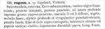

Click on images to enlarge
{kind=link}

Fig. 1. Paropsis rugosa, description
Name
Paropsis rugosa Chapuis, 1877
Corresponds to
Ta41.
Diagnosis and Notes
Blackburn (1896) deals with T. rugosa as part of his 'subgroup i' (i.e., those species with "strongly marked characters"). Within that group, he characterises it as:
AAA. Prosternum normal, but other characters exceptional, as follows:-;
BB. A well-defined antemedian discal excavation on the elytra;
CC. Form broadly ovate, strongly convex.
Blackburn's characterization in his key seems to contradict Chapuis' description, with the latter indicating a small discal depression, while for Blackburn it is "well-defined". Both can be true and are in this case - the depression is well-defined (even more so by the fact that it is usually a contrasting black) but is relatively small in that it does not extend past VR5 laterally. Blackburn considers P. papulenta Chapuis (= P. papulosa Stål, nom. nov.) to be the same as P. rugosa, though indicating that Stål's description is not adequate for "more than a guess". Weise (1916) accepted this synonymy. It is probably best at this stage to accept Blackburn’s synonymy of papulenta Chapuis == papulosa Stål with rugosa.
T. rugosa is a well-known species and is the same as Ta41.
Type specimen
Not examined.
Original description
Translation of original description (Figure 1) by ChatGPT, 03/2026:
Somewhat rounded, convex, yellowish-subaurantiacous; vertex with two black spots; pronotum uneven, sparsely punctured, laterally deeply impressed and coarsely rugose-punctate; with 3 or 5 diffuse black spots; scutellum dark; elytra deeply and irregularly punctate-striated, with dark fuscous punctures, these and the surface variegated with black; tubercles blunt or papules here and there blunt; discal depression small. Length 8 mm. Gipsland, Victoria.
References
Blackburn, T. 1896, "Revision of the genus Paropsis. Part I", Proceedings of the Linnean Society of New South Wales, vol. 21, no. 4, 637-693 (page 640, 645).
Chapuis, F. 1877, "Synopsis des espèces du genre Paropsis", Annales de la Société Entomologique de Belgique (Comptes-rendus), vol. 20, 67-101 (page 91).
Weise, J. 1916, "Chrysomelidae: 12. Chrysomelinae", 1-255 (page 169).
Copyright © 2026. All rights reserved.